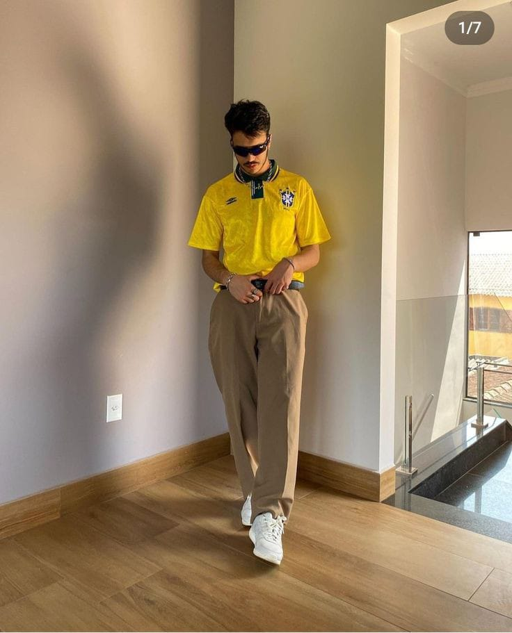

BlokeCore Outfit
Tren fesyen bloke core mungkin juga bisa menjadi salah satu inspirasi buat lo untuk mencoba eksplorasi dan bisa menambah referensi buat lo untuk bergaya lebih simpel, santai tapi tetep pengen terlihat sporty. Kalo lo perhatiin belakangan ini FYP di TikTok banyak banget konten kreator membahas dan ikut menirukan sebuah trend wave yang digandrungi kawula muda Indonesia bahkan dunia yaitu tren fesyen yang bernama bloke core. Tapi tau nggak si lo tren ini apa?
Sebenarnya tren ini bermula dari tren fesyen yang ada di platform Tiktok yang disebut dengan ‘Fashion Tok’ yang awalnya dimulai dan diperkenalkan oleh seorang konten kreator yang bernama Brandon Huntley di platform tersebut. Di setiap unggahan video TikTok-nya ia sering mengenakan style yang unik dan cukup simpel yaitu dengan ciri khasnya yang menggunakan jersey football yang dipadukan dengan celana jeans atau chinos regular dan sepatu casual. Kalo dilihat dari look bloke core ini memang terlihat simple dan casual, tapi inilah sebenarnya tujuan dan esensi dari style tersebut.
.jpeg)
Meskipun style bloke core ini bisa dibilang nggak terlepas dari style ‘scumbro’ trend casual wear yang berhasil dibawa oleh aktor seniman terkemuka Amerika Serikat yaitu Jonah Hill dan Pete Davidson.Kemudian malah baru-baru ini style tersebut kembali mencuat di permukaan dan mulai digandrungi oleh para anak muda indonesia dan menjadi tren baru di tahun 2022 ini, serta tentu juga mempengaruhi pada pergerakan dunia fashion khususnya ‘fashion tok’ tadi.

Kalo dilihat secara look style block core ini memang terkesan santai dan sederhana namun tetap tidak menghilangkan unsur
sporty di dalamnya. Outfit ini sangat cocok untuk lo yang males ribet dan suka dengan gaya santai tapi sporty. Lo bisa
coba berpakaian dengan style bloke core ini buat pergi nongkrong santai di cafe, nonton bola/nobar bola atau lo juga
bisa coba style ini hanya buat sekadar pergi ke minimarket/mall juga oke.
Nah, jadi gimana, Drippers? Apa kalian tertarik mencoba tren fesyen bloke core ini?